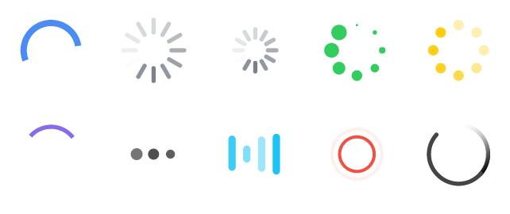

原文连接:https://www.cnblogs.com/chedabang/p/10743862.html
1.前言
此刻深圳大雨瓢泼，周围一片黑压压的。对于这样的日子，果断从冰箱里面拿出肥宅快乐水，打开电脑查看最近更新的番剧，舒服窝在沙发里真是美滋滋。
但是不知道大雨原因，网络加载一直时好时坏，看的贼忧伤，所以临时暂停，先缓冲一下。而此时快乐水中的气泡不断在底下冒出、爆炸，整个房间弥漫着快乐的气息。所以此景就着快乐水，就顺便写一下作为切图仔我平日是如何快乐的处理加载动画。
2.加载动画诞生的背景
在讲加载动画之前，让我们简单回顾一下加载动画的背景。
因为浏览器解析网页的顺序是从上往下执行，所以在这个页面加载的过程中，用户必须得等待页面加载完成才能正常访问这个网页。
在这个用户等待过程中，用户看到或得到是什么呢？
- 白屏
- 单调的DOM结构点
- 零散的空白图片
- 有界面单却无法响应相关操作
- ......
这样用户体验是糟糕的，为了改善用户体验，这个时候前端工程师闪亮登场了。
但是由于网络是不稳定的，而且每个人的网络速率也是各不相同。同理你的项目网站，静态资源的大小也各不相同。不稳定的因素有很多种，所以针对资源加载的不同场合，衍生出两种流派来处理网页资源加载问题。
一派为懒加载，一派为预加载。
免责提示
懒加载和预加载方法博客，已经超级多了。所有本人在此不详细叙说了，因为本篇博客的着重点是动画形式。思考动画与懒加载和预加载如何完美的配合，锦上添花达到一个更好的用户体验，以及对于加载动画的应用思考。
意思就是写的得略粗糙，别喷我菜！
3.懒加载中动画处理
懒加载目前主要应用的场景，主要以电商一类网站居多。就是当用户首次该访问网站的时候，网页只对当前可视区域的资源进行加载，而其他页面例如图片等相关资源则不加载，需要用户滑动到相应的可视区域之后，再加载该区域的资源。
这里我们访问两大电商网站京东、天猫，鼠标向下滚动触发懒加载行为来举例说明：
京东商城懒加载等待效果：
天猫商城懒加载等待效果：
PS：这里两大商城直接用的粗暴用的的GIF图片，虽然GIF图片资源占用的比CSS3动画要大，但是兼容性却比CSS3好，不同情况取舍是不同的。
同时天猫的一个小细节貌似更加贴心。天猫中间的banner区域，放了一个天猫模特换装的GIF图片。专门用来缓冲banner区域的图片预加载时空白感，而京东的banner部分却没有这个小细节。
京东的banner界面
天猫的banner界面
一句话就是，电商大公司懒加载基本上GIF图片。
4.预加载之后动画
前面懒加载加载一部分，然后根据需求用户的行为再相应加载。毕竟这个商品图片多，图片资源数量属于无限大，所以全部加载一次性加载是不可能的。
前面电商网站之所以采取懒加载，是因为一个电商网站页面展示的商品太多了。拿天猫首页来说，天猫一个首页至少7-8屏页面长度那么长，每一屏的上面图片数量都不少。如果说一次性全部加载，那还没有等页面加载完，用户就直接关掉网站去别的网站了。
但是一些类似H5宣传网站，H5小游戏，如果采用懒加载就会有问题了。比如用户控制一个小人运动，但是走一会就因为资源加载问题卡住，走一会就加载卡住，那估计很多用户会直接烦躁的直接关掉网站，那这样估计产品老哥马上提刀来找你了。
因此对于用户行为交互作为重心，而静态资源又不像电商网站一样成千上万数量的H5，会优先把一些静态资源通提前加载完毕，保证后续用户行为体验的流畅性。这种方案又被称为预加载。
然后配合预加载的动画，常见的组合方案就是百分比+进度条，根据资源onload加载情况，来告知用户资源加载情况，已经何时能够正常体验这个H5。

（PS：其实H5完全就只是HTML第5版本的一个标准而已，但是因为一些营销原因导致，H5给很多非技术人员第一印象，就是指在移动端通过动画、视频、游戏等相关进行品牌传播，推广，商品展示的一类新奇的网站了。emmmmmmm）
5.一板斧--循环动画
在前面无论是懒加载还是预加载，都会涉及到一些动画作为视觉铺垫。都属于加载动画两板斧类型，那么接下来首先讲的就是一板斧--循环动画
毕竟要是还不讲解加载动画，估计各位看官都要拿斧头到我出租屋了。
许多物体的变化，都可以分解为连续重复而有规律的变化。因此在动画制作中，可以尽制作几幅画面，然后像走马灯一样重复循环使用，长时间播放，这就是循环动画。

这种就属于通用性加载动画，比如常见的视频缓冲,数据请求这种情况下最为常见。这种动画的循环次数取决于用户的，自身的网络状态。网络越快，该动画存在时间就越短。
同理包括京东闪光动画，天猫的换装动画也是属于循环动画的一种。


虽说这两个直接是粗暴上了GIF图，但是这也是归属循环动画的一种，前端用css3也是可以实现的。
说了这么多，没有代码。感觉怪怪的，先上一个吃热狗的循环DEMO给大家吧。
<style>
.demo{
position: relative;
margin: 100px auto;
width: 800px;
height: 138px;
border: 1px solid #ccc;
overflow: hidden;
}
.wsc{
z-index: 1;
position: absolute;
left: 0;
top: 0;
width: 132px;
height: 138px;
background: url('./img/wsc.png') no-repeat;
}
.hot-dog{
position: absolute;
width: 103px;
height: 58px;
right: 0;
top: 35px;
background: url('./img/hot-dog.png') no-repeat;
}
.first{
-webkit-animation: move 1.5s infinite linear;
animation: move 1.5s infinite linear;
}
.second{
-webkit-animation: move 1.5s 0.3s infinite linear;
animation: move 1.5s infinite 0.3s linear;
}
.three{
-webkit-animation: move 1.5s 0.6s infinite linear;
animation: move 1.5s infinite 0.6s linear;
}
.four{
-webkit-animation: move 1.5s 0.9s infinite linear;
animation: move 1.5s infinite 0.9s linear;
}
.five{
-webkit-animation: move 1.5s 1.2s infinite linear;
animation: move 1.5s infinite 1.2s linear;
}
@-webkit-keyframes move {
0%{
-webkit-transform: translate3d(0, 0, 0);
transform: translate3d(0, 0, 0);
}
100% {
-webkit-transform: translate3d(-720px, 0, 0);
transform: translate3d(-720px, 0, 0);
}
}
</style>
</head>
<body>
<div class="demo">
<div class="wsc"></div>
<div class="hot-dog first"></div>
<div class="hot-dog second"></div>
<div class="hot-dog three"></div>
<div class="hot-dog four"></div>
<div class="hot-dog five"></div>
</div>
</body>效果图如下：
比如借鉴这种风格，就可以做出一种别样的循环动画，两张图片的大小加起来不超过10KB。
案例demo已经上传github，有兴趣的朋友可以通过文末github地址查看
6.二板斧--过程动画
过程动画，是随口叫的。毕竟动画出来的可比前端早，所以我就随便取的名字。错了，可以留言指点一下。
什么叫过程，就是类似像进度条一样，只有进度条加载完了之后，我们就知道这个加载过程完成了。
过程动画也是如此，过程动画只执行一次，通过动画巧妙的反馈整个资源的加载，这种就适合资源比较多的项目。
这里像进度条一类的demo，已经很多了。我就不一一讲解，这里拿17年腾讯视频《忘忧镇》举例子说明吧：
这个忘忧镇视频当时号称全网第一个，交互式剧场。就是整个视频播放，整个电视剧情走向会随着你的交互，而产生不同的结局。当时第一个解锁的剧情就是赵丽颖的陪伴
当时17年10月下旬出来的，这个H5好像就点击破千万级别，把以前游戏场景中的情况部分搬到H5，的确产生了不少口碑。要知道，后面的交互式的美剧，《黑镜：潘达斯奈基》也才是18年末出来的。
emmm，不扯远了。让我们先看看，《忘忧镇》这个H5的加载动画是如何显示的？
当时我看到这个过程动画，但是一下就惊住了。这个加载动画的实现难度并不高，获取加载的进度信息，然后用canvas绘制到上面去。真可谓简约不简单，优点真是创意无极限很棒。
这里估计有人要问了，如果说我的预加载资源很少。大概1s就刷的加载完成，那么这样加载太快就会导致过程动画执行太快，结果用户体验感反倒不好, 但是我又想拥有类似这样的拔剑过程动画，来增强我项目中的特效。
的确，过程动画针对预加载资源比较大的时候，才能发挥它的足够优势。如果说预加载速度很快，我一般建议采用的做法是：
循环动画 + 过程动画
在预加载的时候，先将过程动画隐藏起来，然后调用循环动画。因为循环动画，一秒内至少循环好几遍。所以短时间的动画，循环动画体验效果最佳。然后等待资源加载完成之后，隐藏循环动画,再将过程动画显示出来，作为开场动画显示出来。
这里上一个修改版CSS3拔剑动画，完全可以用来
<title>忘忧镇拔剑CSS3动画</title>
<style>
.demo{
margin: 100px auto;
position: relative;
width: 1000px;
height: 200px;
background: #000;
overflow: hidden;
-webkit-animation: fadeOut 1s 3s ease both;
animation: fadeOut 1s 3s ease both;
}
.left{
z-index: 1;
position: absolute;
top: 50%;
left: 0;
transform: translateY(-50%);
width: 179px;
height: 60px;
background: url('./img/left.png') no-repeat center / contain;
}
.right{
position: absolute;
top: 52%;
left: -8px;
transform: translate3d(0, -50%, 0);
width: 370px;
height: 74px;
background: url('./img/right.png') no-repeat center / contain;
-webkit-animation: move 2s 0.5 ease both;
animation: move 2s 0.5s ease both;
}
@-webkit-keyframes move {
0%{
-webkit-transform: translate3d(0, -50%, 0);
transform: translate3d(0, -50%, 0);
}
100% {
-webkit-transform: translate3d(100px, -50%, 0);
transform: translate3d(100px, -50%, 0);
}
}
@-webkit-keyframes fadeOut {
0%{
opacity: 1;
}
100% {
opacity: 0;
}
}
</style>
</head>
<body>
<div class="demo">
<div class="left"></div>
<div class="right"></div>
</div>
</body>感兴趣的小伙伴可以去《忘忧镇》官网体验一波17年的前端对于动画和视频的处理：
里面有许多动画模式，都可以借鉴参考。
安利一波，希望腾讯视频大佬看见了不要律师函警告我。
7.小结
简单来说，加载动画两板斧
①循环动画 ②过程动画
个人推荐应用场景如下：
- 当做视频处理，或者类似ajax后台数据这一类无法精准的获取资源加载过程。就采用
基础版的循环动画，这样是不错解决方案。 - 当预加载的资源很大，以当前环境的平均网速的情况下加载时长超过3S以上的，建议像《忘忧镇》一样采用
过程动画。 - 当预加载的资源很小，以当前环境的平均网速的情况下加载时长超过3S以上的。建议采用类似吃热狗那种
循环动画，因为如果采用过程动画，就会在导致过程动画执行太快，过程动画的优势发挥不出来。所以这个时候循环动画最适合不过，千万不要不做处理，毕竟几秒的白屏界面或者直接DOM结构的界面，会给用户体验大大折扣。 - 若预加载资源很小，但是又想放上创意不错的过程动画。那就建议将
过程动画修改一下，改为CSS3作为H5页面首次访问的开场动画。例如前面预加载你放上简单的基础版循环动画或者一个循环动画GIF版本，之后页面加载完成之后，就将这个过程动画插入进来，作为该项目的入场动画。
个人碎碎叨叨
这次博客感觉，混乱的狠，更多的偏向理论层。时隔差不多
一年写博客，总感觉缺了点什么。回收站已经躺了几篇写了一大半的博客，算了就这么着，这篇先凑合算四月份开张第一篇吧。
博客中两个DEMO的线上地址：github传送门
我是车大棒，我为我自己插眼。